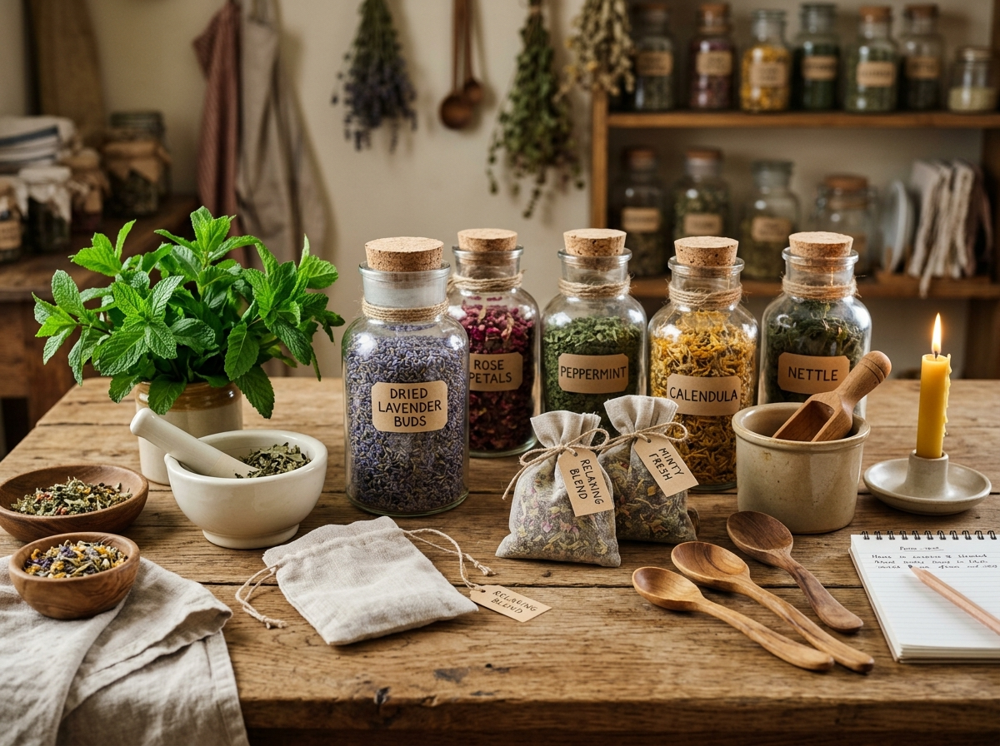

Filary Doświadczeń
Co robimy podczas turnusu?
Wszystkie atrakcje są zaplanowane płynnie w kameralnej grupie do 8 osób.
 Żywioły
Żywioły
Sauna & Zimna Rzeka
Sesje saunowe połączone z zanurzeniem w zimnej leśnej rzece tuż obok. Potężny reset układu nerwowego i odporności.
- Rytuał saunowy z naturalnymi olejkami
- Zimna kąpiel regeneracyjna w rzece
- Kameralna atmosfera (grupa max 8 osób)
 Ruch & Uważność
Ruch & Uważność
Joga & Medytacja na Miejscu
Poranne i wieczorne sesje jogi oraz medytacji w naszym jasnym pokoju stworzonym specjalnie do praktyki uważności.
- Poranna Somatyczna Joga
- Medytacje z uziemieniem
- Spacer uważności leśną ścieżką

Zielarstwo BabciZiołowe Napary & Relaks
Aromatyczne napary ze świeżo zbieranych słowiańskich ziół przygotowywane według dawnych receptur Babci.
- Autorskie mieszanki ziołowe Babci
- Regenerujące infuzje do picia
- Wieczorna herbata przy płomieniach
 Rzemiosło & Kuchnia
Rzemiosło & Kuchnia
Stolarka Dziadka & Kuchnia Izy
Warsztaty rzemiosła z Dziadkiem pod wiatą oraz wieczorne posiłki z tradycyjnego kociołka Izy z wiejskim chlebem.
- Stolarka & Woodwork z Dziadkiem
- Swojski kociołek i wędliny Izy
- Rozmowy przy ogniu pod gwiazdami